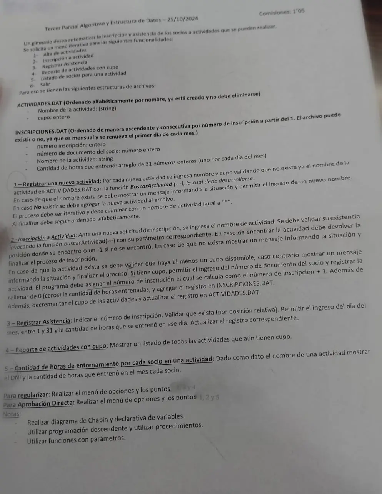

3° parcial, 25/10/2024 (Gimnasio)
3° parcial y final, 25/10/2024
Enunciado


Propuesta de respuesta
Respuesta no verificada. La propuso Luta Studios con inteligencia artificial y ningún docente la revisó. Puede tener errores.
La hoja pide el diagrama de Chapin. Va un diagrama por módulo, con su declaración de variables arriba, y primero el del programa principal. Si un diagrama no entra en la pantalla, tocalo para verlo completo. Después de los diagramas está el mismo algoritmo en Python, para que lo puedas probar. Las sentencias de archivos van con las palabras reservadas de Python (open, pickle.load, pickle.dump, seek, tell). Los textos se completan con ljust para que los registros midan lo mismo. El tamaño de un registro sale de tell() después de leer el primero.
Menú iterativo
1- Alta de actividades
2- Inscripción a actividad
3- Registrar asistencia, por posición relativa
4- Reporte de actividades con cupo
5- Horas de entrenamiento por socio
El mismo algoritmo en Python
Es el programa que se probó, con las mismas sentencias y en el mismo orden que las cajas. Cada Leer del diagrama es un input, convertido a int o float según la declaración, y cada Mostrar es un print.
import os
import pickle
class Actividad:
def __init__(self):
self.nombre = ""
self.cupo = 0
class Inscripcion:
def __init__(self):
self.numero = 0
self.dni = 0
self.actividad = ""
self.horas = [0]*31
# afActividades, afInscripciones: str
# alActividades, alInscripciones: archivo
# tamAct: int
afActividades = "ACTIVIDADES.DAT"
afInscripciones = "INSCRIPCIONES.DAT"
alActividades = open(afActividades, "r+b")
if os.path.exists(afInscripciones):
alInscripciones = open(afInscripciones, "r+b")
else:
alInscripciones = open(afInscripciones, "w+b")
pickle.load(alActividades)
tamAct = alActividades.tell()
def buscarActividad(nom):
# Dicotómica: ACTIVIDADES.DAT está ordenado por nombre
# nom: str
# inicio, fin, medio, pos: int
# reg: Actividad
inicio = 0
fin = os.path.getsize(afActividades) // tamAct - 1
pos = -1
while inicio <= fin and pos == -1:
medio = (inicio + fin) // 2
alActividades.seek(medio * tamAct, 0)
reg = pickle.load(alActividades)
if reg.nombre == nom:
pos = medio
elif nom < reg.nombre:
fin = medio - 1
else:
inicio = medio + 1
return pos
def ORDENAR_ACTIVIDADES():
# cant, i, j: int
# ri, rj: Actividad
cant = os.path.getsize(afActividades) // tamAct
for i in range(cant - 1):
for j in range(i + 1, cant):
alActividades.seek(i * tamAct, 0)
ri = pickle.load(alActividades)
alActividades.seek(j * tamAct, 0)
rj = pickle.load(alActividades)
if ri.nombre > rj.nombre:
alActividades.seek(i * tamAct, 0)
pickle.dump(rj, alActividades)
alActividades.seek(j * tamAct, 0)
pickle.dump(ri, alActividades)
alActividades.flush()
def ALTA_ACTIVIDAD():
# nom: str
# reg: Actividad
nom = input("Nombre de la actividad (* para terminar): ")
while nom != "*":
nom = nom.ljust(30, " ")
if buscarActividad(nom) != -1:
print("Esa actividad ya existe")
else:
reg = Actividad()
reg.nombre = nom
reg.cupo = int(input("Cupo: "))
while reg.cupo <= 0:
reg.cupo = int(input("Tiene que ser mayor que 0: "))
alActividades.seek(0, 2)
pickle.dump(reg, alActividades)
alActividades.flush()
ORDENAR_ACTIVIDADES()
nom = input("Nombre de la actividad (* para terminar): ")
def INSCRIPCION():
# nom: str
# pos, tam, tamIns, d: int
# act: Actividad
# ins, ult: Inscripcion
nom = input("Nombre de la actividad: ").ljust(30, " ")
pos = buscarActividad(nom)
if pos == -1:
print("No existe esa actividad")
else:
alActividades.seek(pos * tamAct, 0)
act = pickle.load(alActividades)
if act.cupo < 1:
print("La actividad no tiene cupo")
else:
ins = Inscripcion()
ins.dni = int(input("Número de documento del socio: "))
tam = os.path.getsize(afInscripciones)
if tam == 0:
ins.numero = 1
else:
alInscripciones.seek(0, 0)
pickle.load(alInscripciones)
tamIns = alInscripciones.tell()
alInscripciones.seek(tam - tamIns, 0)
ult = pickle.load(alInscripciones)
ins.numero = ult.numero + 1
ins.actividad = nom
for d in range(31):
ins.horas[d] = 0
alInscripciones.seek(0, 2)
pickle.dump(ins, alInscripciones)
alInscripciones.flush()
act.cupo = act.cupo - 1
alActividades.seek(pos * tamAct, 0)
pickle.dump(act, alActividades)
alActividades.flush()
print("Número de inscripción:", ins.numero)
def ASISTENCIA():
# num, tam, tamIns, dia: int
# ins: Inscripcion
tam = os.path.getsize(afInscripciones)
if tam == 0:
print("No hay inscripciones")
else:
alInscripciones.seek(0, 0)
pickle.load(alInscripciones)
tamIns = alInscripciones.tell()
num = int(input("Número de inscripción: "))
while num < 1 or num > tam // tamIns:
num = int(input("No existe esa inscripción, ingrese otra: "))
alInscripciones.seek((num - 1) * tamIns, 0)
ins = pickle.load(alInscripciones)
dia = int(input("Día del mes (1 a 31): "))
while dia < 1 or dia > 31:
dia = int(input("Día inválido: "))
ins.horas[dia - 1] = int(input("Horas entrenadas: "))
while ins.horas[dia - 1] < 0 or ins.horas[dia - 1] > 24:
ins.horas[dia - 1] = int(input("Entre 0 y 24: "))
alInscripciones.seek((num - 1) * tamIns, 0)
pickle.dump(ins, alInscripciones)
alInscripciones.flush()
def CON_CUPO():
# tam: int
# act: Actividad
tam = os.path.getsize(afActividades)
alActividades.seek(0, 0)
while alActividades.tell() < tam:
act = pickle.load(alActividades)
if act.cupo > 0:
print(act.nombre, act.cupo)
def HORAS_POR_SOCIO():
# nom: str
# tam, d, total: int
# ins: Inscripcion
nom = input("Nombre de la actividad: ").ljust(30, " ")
tam = os.path.getsize(afInscripciones)
alInscripciones.seek(0, 0)
while alInscripciones.tell() < tam:
ins = pickle.load(alInscripciones)
if ins.actividad == nom:
total = 0
for d in range(31):
total = total + ins.horas[d]
print(ins.dni, total)
# Programa principal
# opcion: int
opcion = 0
while opcion != 6:
print("1- Alta de actividades")
print("2- Inscripción a actividad")
print("3- Registrar asistencia")
print("4- Reporte de actividades con cupo")
print("5- Listado de socios para una actividad")
print("6- Salir")
opcion = int(input("Opción: "))
while opcion < 1 or opcion > 6:
opcion = int(input("Opción inválida: "))
match opcion:
case 1:
ALTA_ACTIVIDAD()
case 2:
INSCRIPCION()
case 3:
ASISTENCIA()
case 4:
CON_CUPO()
case 5:
HORAS_POR_SOCIO()
alActividades.close()
alInscripciones.close()Respuesta no verificada. Puede tener errores.
Se armó con la hoja del examen y la página del 3° parcial y final (registros como clase, recorrer, búsquedas, actualizar un registro y alta). Las operaciones de archivos siguen las diapositivas de merge y corte de control. El Chapin sigue la forma de las diapositivas del examen de Historia Clínica de 2019. La apertura de INSCRIPCIONES.DAT sigue la de los resúmenes para un archivo que puede no existir.
Quedó en duda: El número de inscripción es el del último registro más 1, y arranca en 1 si el archivo está vacío. Por eso la inscripción N está en la posición N - 1. ACTIVIDADES.DAT se ordena en el disco después de cada alta, con el método de la materia, porque la hoja no da un procedimiento. El nombre de la actividad se completa a 30 caracteres, porque la hoja no da el largo. Las horas de un día se validan de 0 a 24, y cargar otra vez el mismo día reemplaza el valor. Los modos de open (rb, r+b, w+b) salen de la tabla de dos resúmenes de alumnos, que ningún apunte de la cátedra trae. En Python, pickle graba un entero menor que 256 en menos bytes que uno más grande. Por eso desde la inscripción 256, o cuando un cupo cruza 255, los registros dejan de medir lo mismo. Entonces el registro deja de coincidir con la posición que calcula el programa. El material pide registros del mismo tamaño y solo muestra cómo lograrlo con textos (ljust). Las pruebas se hicieron con datos que no cambian el tamaño. Las diapositivas de la materia no muestran en Chapin la lectura de datos ni la selección múltiple. Acá van como Leer y como Según, con una columna por caso.
¿Cómo te fue?
Marcá cada tema del examen.
- ArchivosSecuencial y de acceso directo, en 3° parcial y final
- Posición relativaCómo viene el examen, en 3° parcial y final
- FuncionesFunciones que el enunciado pide invocar, en 2° parcial